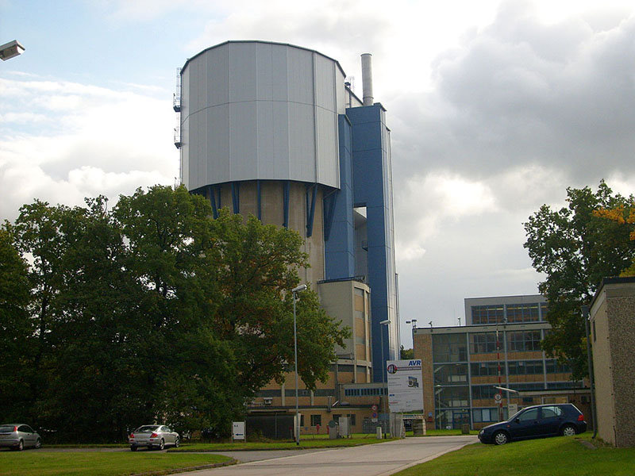

The BigBrain Partners
How to contact the partners

 Structural and functional organisation of the brain
INM-1
Forschungszentrum Jülich
52425 Jülich, Germany
Structural and functional organisation of the brain
INM-1
Forschungszentrum Jülich
52425 Jülich, Germany
HIBALL is the new funding umbrella for the BigBrain Project. It aims to transform the successful collaboration between McGill (MNI, BIC) and Forschungszentrum Jülich (INM, JSC) to the next level by reinforcing utilization and co-development of the latest AI and high-performance computing (HPC) technologies for building highly detailed 3D brain models. It establishes a close collaboration with CIFAR and MILA in Canada, and Helmholtz AI in Germany.